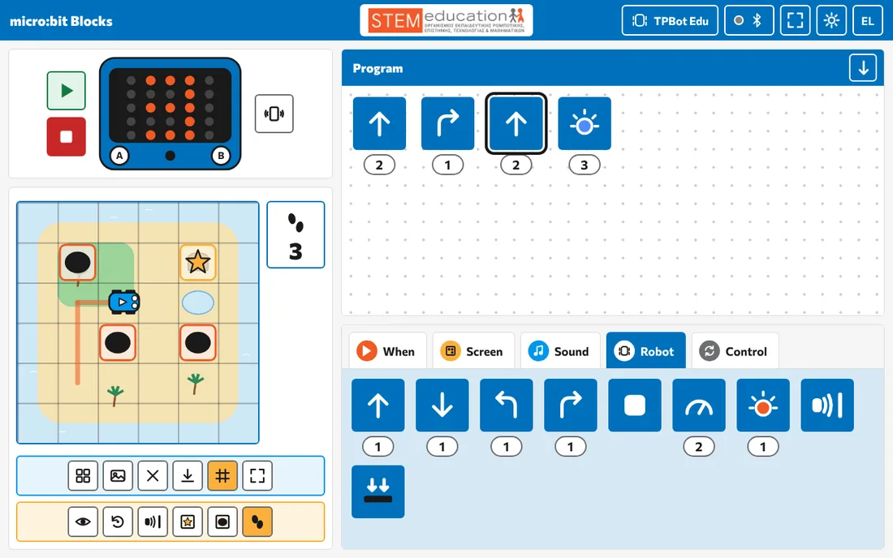

ΓΙΑ ΠΑΙΔΙΑ 5–7 ΕΤΩΝFOR AGES 5–7
Προγραμματισμός ρομπότ με εικόνεςCoding robots with pictures
Σύρετε εικόνες ή πατήστε βελάκια για να προγραμματίσετε ένα ρομπότ micro:bit να κινείται σε μια πίστα, να ανάβει φώτα, να παίζει ήχους και να πιάνει αντικείμενα. Στην πίστα το περιμένουν λέξεις για γράψιμο και αριθμοί για λογαριασμούς. Χωρίς λέξεις στην οθόνη, χωρίς εγκατάσταση.
Drag pictures or press arrows to program a micro:bit robot to drive along a track, light up, play sounds and pick things up. On the track, words to write and numbers to work out are waiting. No words on screen, no installation.
Δωρεάν, στα ελληνικά και στα αγγλικά. Λειτουργεί σε Chrome ή Edge.Free, in Greek and English. Works in Chrome or Edge.


Τι κάνειWhat it does
Εικόνες αντί για λέξειςPictures instead of words
Κάθε μπλοκ είναι μια εικόνα με, το πολύ, έναν αριθμό από κάτω. Τα παιδιά σύρουν, πατούν και παίζουν.
Every block is a picture with at most one number underneath. Children drag, tap and play.
ΠερισσότεραMoreΚαταγραφή βημάτωνRecord mode
Για τα μικρότερα: πατούν βελάκια, το ρομπότ τα θυμάται και τα εκτελεί με το «Πάμε!», ή κινείται αμέσως σαν τηλεχειριστήριο.
For the youngest: they press arrows, the robot remembers them and runs them with "Go!", or moves at once like a remote control.
ΠερισσότεραMoreΔοκιμή χωρίς ρομπότTry it without a robot
Εικονικό micro:bit και πίστα, προεπισκόπηση διαδρομής, προσομοίωση αισθητήρων και πλήρης οθόνη για τον προβολέα.
A virtual micro:bit and track, route preview, sensor simulation and a full-screen stage for the projector.
ΠερισσότεραMoreΖωντανός έλεγχος μέσω BluetoothLive control over Bluetooth
Συνδέστε μία φορά. Οθόνη LED, ήχοι, κουμπιά και κίνηση του TPBot Edu ή του TPBot δουλεύουν αμέσως, χωρίς λήψη προγραμμάτων.
Connect once. The LED screen, sounds, buttons and movement of the TPBot Edu or TPBot work at once, with no program downloads.
ΠερισσότεραMoreΠίστες και παιχνίδιαTracks and games
Έτοιμες πίστες με αστέρια και παγίδες, ή δικές σας: φωτογραφίστε την πίστα του δαπέδου ή ζωγραφίστε κάθε τετράγωνο.
Ready-made tracks with stars and traps, or your own: photograph the floor track or draw each square.
ΠερισσότεραMoreΛέξεις στην πίσταWords on the track
Το ρομπότ φτάνει στην μπανάνα και το παιδί γράφει «μπανάνα» με το δάχτυλο. Κεφαλαία ή πεζά, με τόνους, σε τέσσερα επίπεδα.
The robot reaches the banana and the child writes "banana" with a finger. Capitals or lowercase, with accents, at four levels.
ΠερισσότεραMoreΑριθμοί στην πίσταNumbers on the track
Μέτρηση, σύγκριση, πράξεις, δεκάδες, χρήματα, ρολόι και μοτίβα, από το νηπιαγωγείο ως τη Β΄ Δημοτικού. Η απάντηση μπορεί να κινεί το ρομπότ.
Counting, comparing, sums, tens, money, the clock and patterns, from kindergarten to grade 2. The answer can move the robot.
ΠερισσότεραMoreΒίντεο και εικόνεςVideos and pictures
Βάλτε ένα βίντεο YouTube, μια εικόνα ή ένα κινούμενο GIF σε ένα τετράγωνο: ανοίγει όταν φτάσει εκεί το ρομπότ.
Put a YouTube video, a picture or an animated GIF on a square: it opens when the robot gets there.
ΠερισσότεραMoreΠρόσθετα: αρπάγηAdd-ons: grabber
Μια αρπάγη με σερβοκινητήρα ανοίγει και κλείνει με ένα μπλοκ, ώστε το ρομπότ να μεταφέρει αντικείμενα.
A grabber with a servo opens and closes with one block, so the robot can carry objects.
ΠερισσότεραMoreΞεκινώνταςGetting started
- Χρειάζεστε tablet Android, Chromebook ή υπολογιστή με Chrome ή Edge, ένα micro:bit V2 και, για κίνηση, ένα ρομπότ TPBot Edu ή TPBot.You need an Android tablet, a Chromebook or a computer with Chrome or Edge, a micro:bit V2 and, to drive, a TPBot Edu or TPBot robot.
- Φορτώστε μία φορά ένα μικρό πρόγραμμα στο micro:bit (οδηγίες παρακάτω). Από εκεί και πέρα κανένα παιδί δεν χρειάζεται να το ανοίξει ξανά.Load one small program onto the micro:bit, once (instructions below). After that no child ever needs to open it again.
- Ανοίξτε την εφαρμογή και πατήστε το κουμπί Bluetooth. Διαλέξτε το micro:bit σας: στην οθόνη του εμφανίζεται ένα τικ.Open the app and press the Bluetooth button. Choose your micro:bit: a tick appears on its screen.
- Σύρετε μπλοκ στο πρόγραμμα και πατήστε το πράσινο κουμπί, ή ανοίξτε την καταγραφή βημάτων και πατήστε βελάκια. Ο οδηγός χρήσης εξηγεί τα υπόλοιπα.Drag blocks into the program and press the green button, or open Record mode and press arrows. The user guide explains the rest.
Το πρόγραμμα του micro:bitThe micro:bit program
Το micro:bit χρειάζεται ένα μικρό πρόγραμμα που δείχνει τις εικόνες, παίζει τους ήχους, οδηγεί το ρομπότ και στέλνει πίσω τα κουμπιά και τους αισθητήρες. Το φτιάχνετε μία φορά:
The micro:bit needs one small program that shows the pictures, plays the sounds, drives the robot and sends the buttons and sensors back. You make it once:
- Ανοίξτε το makecode.microbit.org και φτιάξτε ένα νέο έργο.Open makecode.microbit.org and start a new project.
- Επιλέξτε JavaScript από τον διακόπτη στην κορυφή και επικολλήστε τον κώδικα του main.ts.Switch to JavaScript at the top and paste the code of main.ts.
- Στις Επεκτάσεις προσθέστε το bluetooth και επικολλήστε τη διεύθυνση
https://github.com/elecfreaks/pxt-TPBot.In Extensions add bluetooth and paste the addresshttps://github.com/elecfreaks/pxt-TPBot. - Στις ρυθμίσεις του έργου ενεργοποιήστε το No Pairing Required.In the project settings turn on No Pairing Required.
- Πατήστε Λήψη και αντιγράψτε το αρχείο .hex στον δίσκο MICROBIT.Press Download and copy the .hex file onto the MICROBIT drive.
ΠίστεςTracks
Μια βιβλιοθήκη με πίστες για το δάπεδο, στα ελληνικά και στα αγγλικά: χάρτες, κύκλοι ζωής, ανακύκλωση, ακολούθηση γραμμής, παιχνίδια με στόχο και παγίδες. Κάθε πίστα ανοίγει στην εφαρμογή με ένα πάτημα. Τη δική σας πίστα την κατεβάζετε ως εικόνα, μαζί με τα αστέρια, τις παγίδες και τα διαδραστικά τετράγωνα, και την ανοίγετε σε κάθε tablet.
A library of floor tracks, in Greek and English: maps, life cycles, recycling, line following, target-and-trap games. Every track opens in the app with one tap. Your own track downloads as a picture, together with its stars, traps and interactive squares, and opens on any tablet.
Οδηγός χρήσηςUser guide
Ο πλήρης οδηγός εξηγεί κάθε κουμπί και κάθε μπλοκ, με εικόνες, και προτείνει δραστηριότητες για το νηπιαγωγείο και τις πρώτες τάξεις του δημοτικού.
The full guide explains every button and every block, with pictures, and suggests activities for kindergarten and the first grades of primary school.
Συχνές ερωτήσειςFrequently asked questions
Ποιες συσκευές υποστηρίζονται;Which devices work?
Tablet Android, Chromebook, Windows, macOS και Linux με Chrome ή Edge. Στο iPad η εφαρμογή ανοίγει και η προσομοίωση δουλεύει, αλλά ο browser δεν επιτρέπει σύνδεση Bluetooth με το micro:bit.
Android tablets, Chromebooks, Windows, macOS and Linux with Chrome or Edge. On an iPad the app opens and the simulation works, but the browser does not allow a Bluetooth connection to the micro:bit.
Χρειάζεται internet;Do I need internet?
Για να ανοίξει η εφαρμογή και για να φορτώσει η βιβλιοθήκη πιστών, ναι. Μόλις ανοίξει, το πρόγραμμα και η σύνδεση με το micro:bit δεν το χρειάζονται.
To open the app and to load the tracks library, yes. Once it is open, the program and the connection to the micro:bit do not need it.
Ποια ρομπότ υποστηρίζονται;Which robots are supported?
Το TPBot Edu (ακριβείς αποστάσεις και στροφές) και το TPBot (χρονομετρημένες κινήσεις), με προαιρετική αρπάγη σε σερβοκινητήρα. Η εφαρμογή είναι φτιαγμένη ώστε να προστεθούν και άλλα ρομπότ και πρόσθετα.
TPBot Edu (exact distances and turns) and TPBot (timed moves), with an optional servo grabber. The app is built so that more robots and add-ons can be added.
Αποθηκεύονται δεδομένα των παιδιών;Is any data about the children stored?
Όχι. Δεν υπάρχουν λογαριασμοί και δεν στέλνεται τίποτα. Οι ρυθμίσεις και το τελευταίο πρόγραμμα μένουν μόνο στη συσκευή. Δείτε την πολιτική απορρήτου.
No. There are no accounts and nothing is sent anywhere. The settings and the last program stay on the device only. See the privacy policy.
Μπορώ να φτιάξω δική μου πίστα;Can I make my own track?
Ναι. Φωτογραφίστε την πίστα του δαπέδου, ανεβάστε μια εικόνα ή ζωγραφίστε κάθε τετράγωνο μέσα στην εφαρμογή, και κατεβάστε την ως εικόνα για άλλα tablet. Δείτε τον οδηγό.
Yes. Photograph the floor track, upload a picture or draw each square in the app, then download it as a picture for other tablets. See the guide.
Για ποιες ηλικίες είναι;Which ages is it for?
Για 5–7 ετών: νηπιαγωγείο, Α΄ και Β΄ Δημοτικού. Τα μικρότερα ξεκινούν με την καταγραφή βημάτων, τα μεγαλύτερα περνούν στα μπλοκ, τις επαναλήψεις και τους αισθητήρες. Οι λέξεις και οι αριθμοί στην πίστα ρυθμίζονται από τον εκπαιδευτικό.
For ages 5–7: kindergarten, grade 1 and grade 2. The youngest start with Record mode, older children move on to blocks, loops and sensors. The words and numbers on the track are set by the teacher.